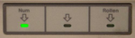

Nummernblock aktivieren
Zum Verständnis dieses Artikels sind folgende Seiten hilfreich:
 Bei Desktop-Rechnern ist es oftmals gewünscht, dass der Nummernblock (auch Ziffernblock genannt) beim Start der Benutzeroberfläche aktiviert ist. Bei Notebooks ohne separaten Nummernblock ist dies dagegen wegen der Doppelbelegung der Tasten eher kontraproduktiv.
Es gibt zwar in vielen BIOS-Versionen die Möglichkeit, den Nummernblock beim Computerstart zu aktivieren bzw. deaktivieren, in der Regel überschreibt das Betriebssystem bzw. die Desktop-Umgebung diese Einstellung aber. Im Folgenden wird erklärt, wie man den Nummernblock unter Ubuntu dauerhaft aktiviert (oder auch deaktiviert).
Man muss hier drei verschiedene Phasen bzw. Situationen unterscheiden:
Im Textmodus (virtuelles Terminal)
Hintergrund: Manche Desktop-Umgebungen speichern den Zustand des Zahlenblocks beim Abmelden. Hier kann es also ausreichen, den Zahlenblock zu aktivieren und sich anschließend ab- und wieder neu anzumelden. Das heißt aber nicht zwangsläufig, dass der Zahlenblock auch bei der grafischen Anmeldung automatisch zur Verfügung steht, da ein Displaymanager unabhängig von der eingesetzten Desktop-Umgebung sein kann.
Virtuelles Terminal¶
Dieser Abschnitt bezieht sich auf die virtuellen Terminals, die mit Strg + Alt + F1 - F6 erreichbar sind.
Upstart¶
Da Ubuntu bis einschließlich Ubuntu 14.04 auf Upstart setzt und die Datei /etc/init.d/keyboard-setup (siehe nächster Abschnitt) ab Ubuntu 10.04 nicht mehr existiert, hier ein Beispiel für Upstart. Die Datei /etc/init/num-on.conf mit Root-Rechten erstellen[1] und mit folgendem Inhalt füllen:
1 2 3 4 5 6 7 8 9 | description "Schaltet NumLock beim Start für alle Konsolen ein" start on runlevel [12] script for t in `seq 1 6`; do setleds +num < /dev/tty$t > /dev/null done end script |
Anmeldebildschirm¶
Will man, dass der Zahlenblock bei der grafischen Anmeldung automatisch aktiv ist, so benötigt man das Programm Numlockx  . Dazu muss man folgendes Paket installieren[2]:
. Dazu muss man folgendes Paket installieren[2]:
numlockx (universe)
 mit apturl
mit apturl
Paketliste zum Kopieren:
sudo apt-get install numlockx
sudo aptitude install numlockx
LightDM¶
Ab Ubuntu 11.10/Kubuntu 12.10 ist LightDM der Standard-Displaymanager. Zur Aktivierung des Ziffernblocks ist die Datei /etc/lightdm/lightdm.conf mit Root-Rechten zu bearbeiten. Dort fügt man
greeter-setup-script=/usr/bin/numlockx on
im Abschnitt [SeatDefaults] ein. Anschließend muss der Rechner neu gestartet werden.
Je nach Ubuntu-Version und -Variante befindet sich die Datei lightdm.conf an unterschiedlichen Orten (teilweise besitzt sie sich auch einen anderen Namen). Bei Ubuntu 14.04 ist es z.B. die Datei /usr/share/lightdm/lightdm.conf.d/50-unity-greeter.conf, bei Xubuntu 14.04 dagegen /etc/lightdm/lightdm.conf.d/10-xubuntu.conf. Bei Xubuntu 15.10 und Xubuntu 16.04 muss folgende Datei bearbeitet werden: /usr/share/lightdm/lightdm.conf.d/60-lightdm-gtk-greeter.conf
GDM¶
Bei Benutzung von GDM (Standard bei Ubuntu GNOME, bei Ubuntu nur bis Ubuntu 11.04) benötigt man eine Änderung in der Datei /etc/gdm/Init/Default. Hier setzt man die Zeile
which numlockx >/dev/null && numlockx on
unterhalb der ersten Zeile ein.
Nach der Anmeldung¶
Unity/GNOME¶
In der Desktop-Umgebung GNOME und auch unter Unity kann der Nummernblock über den Konfigurationseditor dconf-editor eingerichtet werden[3]. Dort geht man zum Schema
"org → gnome → settings-daemon → peripherals → keyboard"
Nun kann man den Schlüssel "numlock_state" anklicken und auf "on" stellen, um den Nummernblock zu aktivieren. Außerdem findet man im selben Schema den Schlüssel "remember_numlock_state". Diesen kann man wählen, wenn GNOME sich nur den letzten Status des Nummernblocks merken soll.
KDE¶
In der KDE kann der Nummernblock wie folgt dauerhaft aktiviert werden:
"Kickoff-Anwendungstarter-Menü -> Anwendungen -> Einstellungen -> Systemeinstellungen -> Eingabegeräte -> Tastatur -> Zahlenblock bei KDE-Start -> Einschalten"
Numlockx¶
Falls der Nummernblock nach der grafischen Anmeldung durch die oben genannten Methoden nicht aktiviert werden sollte oder man kein GNOME oder KDE einsetzt, so kann der Nummernblock auch mit Hilfe des Programms numlockx (siehe oben) aktiviert werden. Dazu muss man den Befehl:
numlockx on
in den Autostart übernehmen. Eine Methode ist, einen Editor zu öffnen und diesen Code:
1 2 3 4 5 6 | [Desktop Entry] Name=Ziffernblock anschalten Type=Application Exec=numlockx on Terminal=false NoDisplay=True |
unter dem Dateinamen numlockx_on.desktop [4] im Verzeichnis
abspeichern.
Problembehebung¶
Unter Xfce bzw. Xubuntu sollte man prüfen, ob unter "Einstellungen -> Barrierefreiheit -> Maus" die Mausemulation deaktiviert ist. Auch bei anderen Desktop-Umgebungen können bestimmte Einstellungen zur Barrierefreiheit für Verwirrung sorgen (meist sind diese aus Versehen aktiviert worden).
 Übersichtsartikel
Übersichtsartikel- Erstellt mit Inyoka
-
 2004 – 2017 ubuntuusers.de • Einige Rechte vorbehalten
2004 – 2017 ubuntuusers.de • Einige Rechte vorbehalten
Lizenz • Kontakt • Datenschutz • Impressum • Serverstatus -
Serverhousing gespendet von